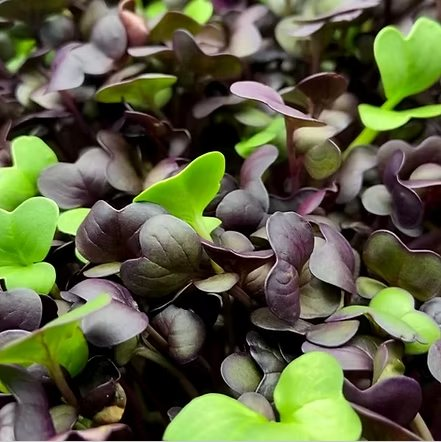
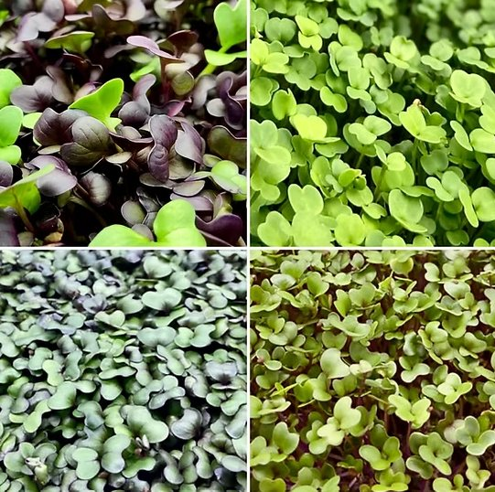
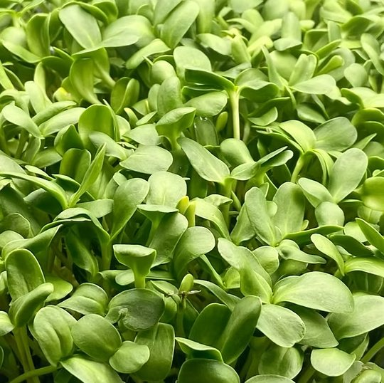
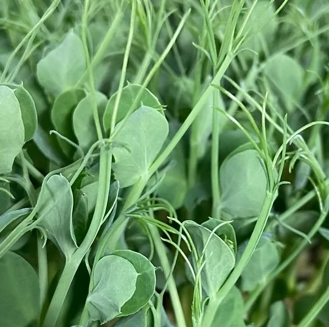

More plants. Bigger flavour.
Tiny Harvest Microgreens makes it easy to add fresh, organically grown microgreens to everyday meals. Choose broccoli, sunflower, radish, salad mix or pea — reorder with Tiny Harvest and save 5%.


Pick your greens
Fresh, simple and reliable
Organically grown
Produced with a clean, fresh-food focus and no unnecessary product complexity.
Harvested fresh
Designed around small-batch freshness and fast turnaround from harvest to plate.
Returning Customer?
Customers who choose to reorder with Tiny Harvest receive an automatic 5% discount.
Payment ready
Stripe and PayPal placeholders are included for live payment links when published.
How to use each microgreen
Broccoli
Mild and fresh. Great in smoothies, wraps, sandwiches, omelettes and grain bowls.
Pea (Speckled)
Sweet and crisp. Add to stir-fries after cooking, salads, soups, noodles and lunch bowls.
Radish
Peppery and bold. Use on tacos, eggs, avocado toast, burgers, wraps and roasted veg.
Salad Mix
Balanced and colourful. Serve as a ready garnish, side salad, sandwich filler or bowl topper.
Sunflower
Crunchy and nutty. Works well in salads, wraps, hummus bowls, sandwiches and savoury snacks.
Fresh every week — save 5%
Reorder with Tiny Harvest and the 5% discount is automatically applied at checkout. Pause, change or cancel whenever you need to.
Harvested fresh
Return Discount
Payment ready
Basket summary
Your basket is empty.
Choose your varieties
Pick broccoli, sunflower, radish, salad mix, pea or a custom combination.
Select weekly !!!!! or one-off
Subscribe each week and receive 5% off the basket total.
Checkout securely
This offline demo includes payment buttons ready for live Stripe or PayPal links.
What customers are saying
Review cards are included as editable sample content so real testimonials can be added later.
“The microgreens are fresh, vibrant and easy to add to lunches. The returning discount was a lovely surprise!”
“Great flavour and presentation. The radish adds a real peppery lift and the sunflower has a lovely crunch.”
“The salad mix looks fantastic on the plate and the pea shoots are sweet and crisp. Really convenient.”
Follow Tiny Harvest Microgreens